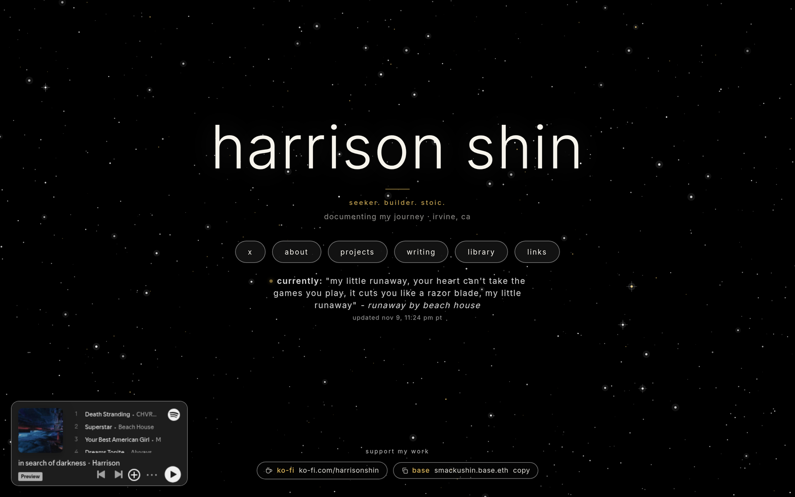

Why I Think It’s Important to Have Your Own Website & Domain
I think everyone, and I mean everyone, should have their own domain and website.
It doesn’t matter if you aren’t famous or feel like you don’t have anything to share. If you use social media and want to keep people updated on your life, a personal website is a great way to do that. It’s also a great way to showcase your work, or just to put all the links to everywhere else you can be found on the internet in one place.
My website is nothing fancy. It’s a hodgepodge of links, ramblings, and aesthetics. But it is mine. I can do whatever I want with it, and I can change it whenever I want. It helps me express my thoughts, and people can engage with it if they want to.
The best part for me is that I can share what I want without having to consume anything. No feed. No algorithm. No mindless brain rot content. I show up, put something out, and leave.
Renting vs. owning
When you post on a social media platform, you’re basically renting space. The platform decides how your stuff looks, who sees it, and whether it stays up. The rules can change overnight, and you don’t get a say.
Your own domain is different. It’s your address. If you don’t like where your site is hosted, you can pick it up and move it somewhere else, and anyone who knows your address can still find you.
I don’t think that means you have to quit social media. My writing lives on my site, and the same posts also go up on Substack and X. The difference is that my site is home base. Everything else points back to it.
How I built mine
A big inspiration for me was Luke Smith’s site, lukesmith.xyz. It’s simple, and he hosts his articles right there on his own site instead of handing everything over to a platform. I liked that a lot.
I built harrisonshin.com myself, with a lot of help from AI (Cursor). It’s hosted on GitHub Pages, and I moved my domain off Squarespace hosting to make it happen. I’m not a web developer, and I still got it done. If I can do it, you can too.

Since it’s mine, I get to add whatever little things I want. There’s a little status line under my links that I update just by sending a text. There’s a Spotify playlist in the corner. There’s an RSS feed, so anyone who wants to follow my writing can, without needing an account anywhere. None of it is necessary. I just like it, and that’s the whole point.
Make it yours
Your site doesn’t have to be impressive. It doesn’t need to be a portfolio or a business. It can be a page with your name, a few links, and a sentence about what you’re up to. You can build on it whenever you feel like it.
Mine says “seeker. builder. stoic.” and “documenting my journey.” That’s exactly what it is, and it will keep changing as I do.
My hope is that I can get my friends, colleagues, and the people around me to see the appeal, get their own websites, and express themselves the way they want to.
Owning your own domain and website is like being a digital landowner. You own a little piece of the internet.
How cool is that?